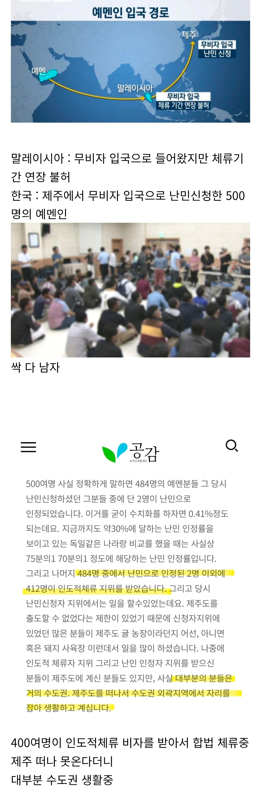
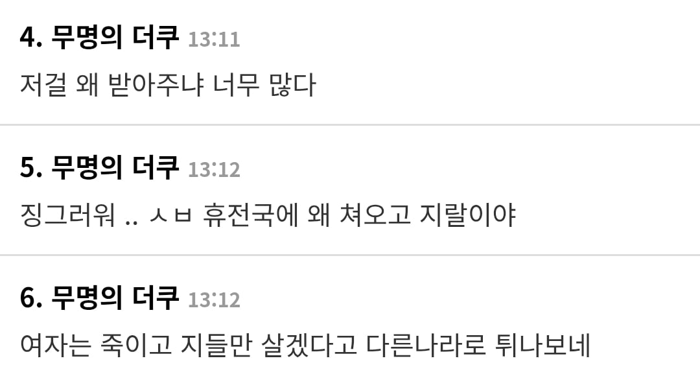
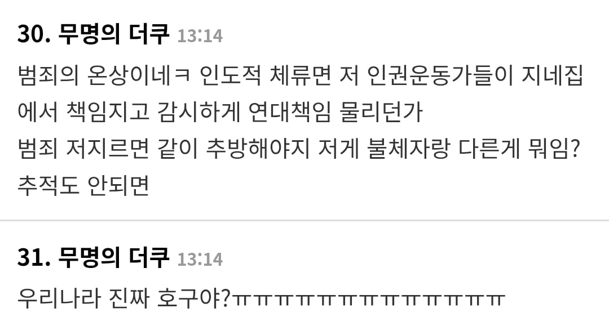
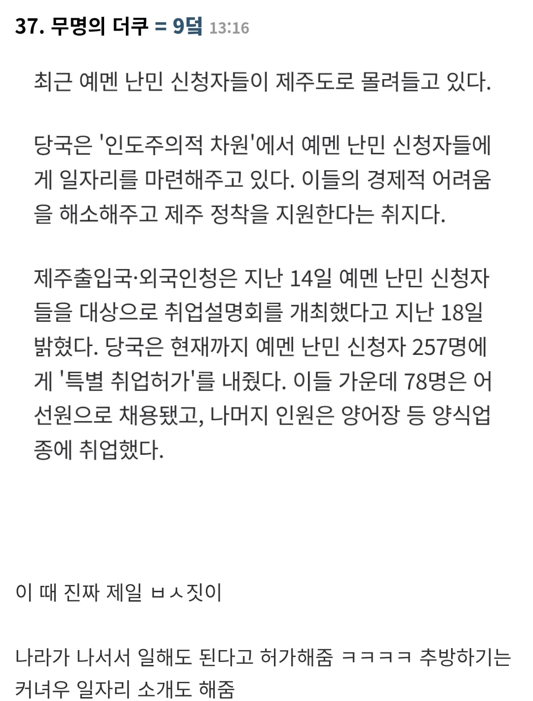
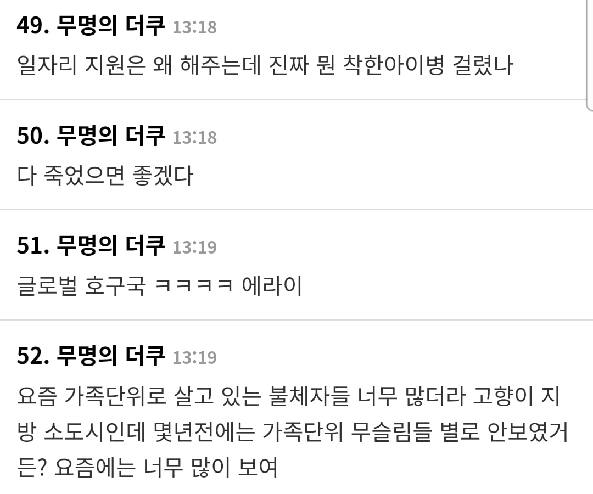
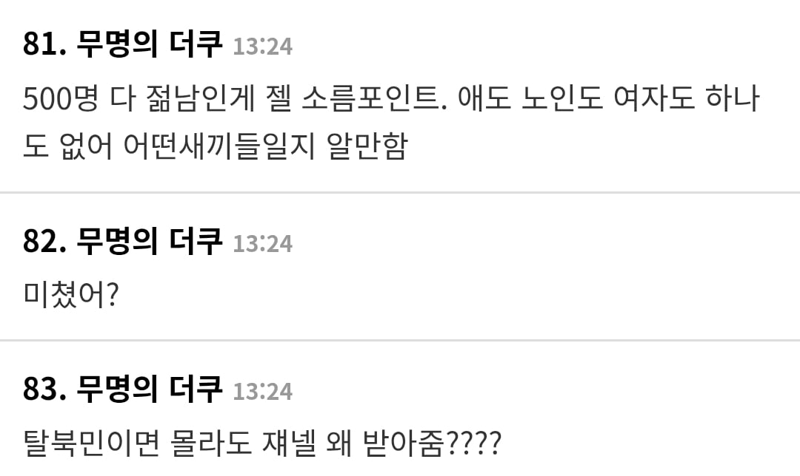
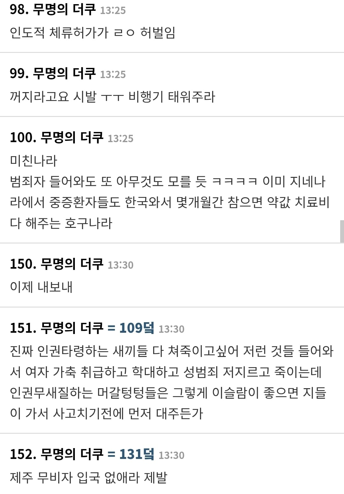
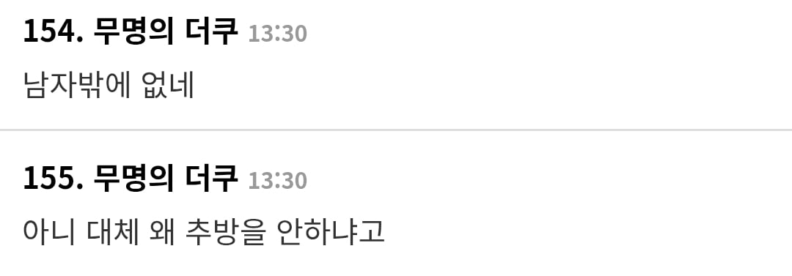
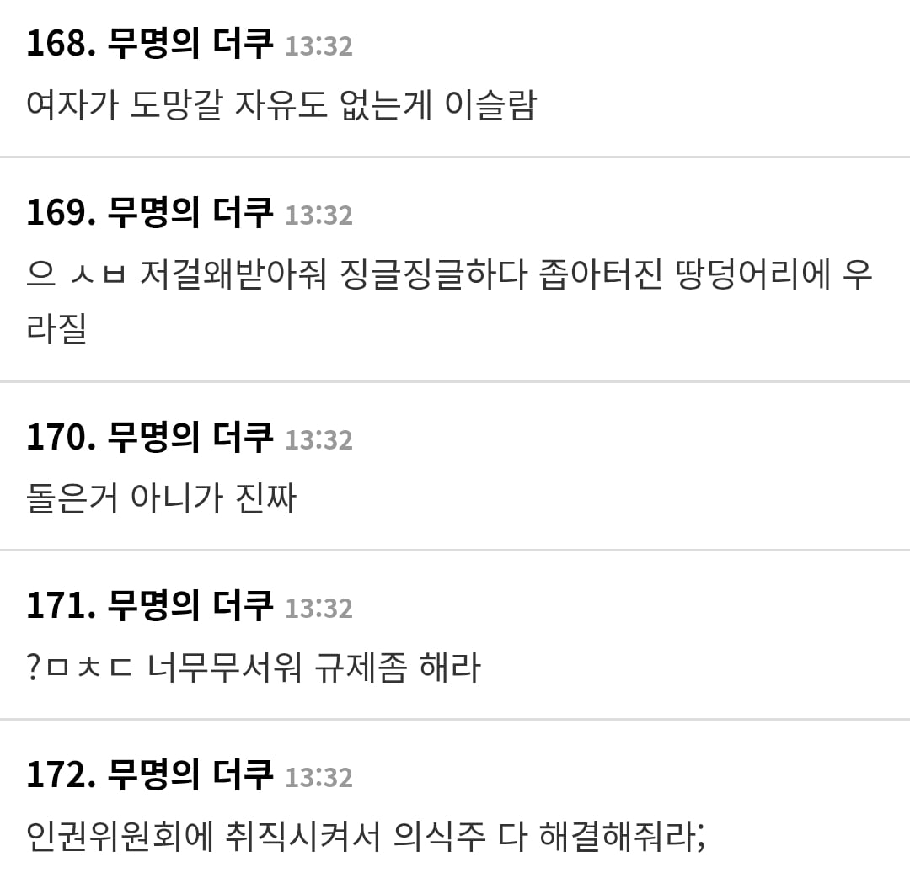
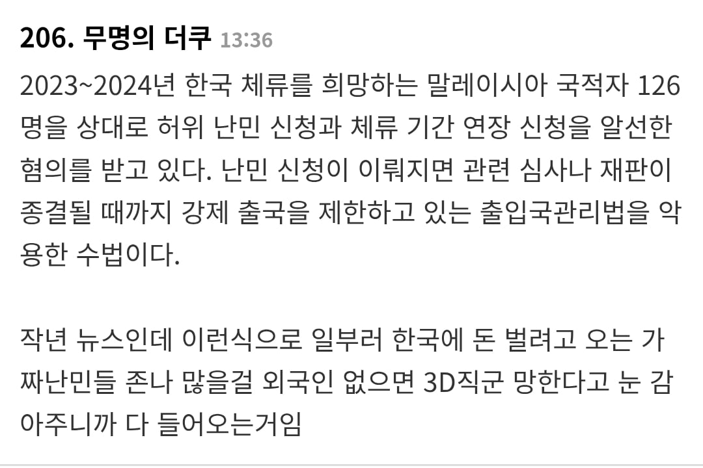

여자가 껴있다고 여론이 좋아질것같진 않지만
암튼 싹다 남자여서 여초서 난리남










여자가 껴있다고 여론이 좋아질것같진 않지만
암튼 싹다 남자여서 여초서 난리남









왜 방출 안함..?
사실이 좀 다른 부분이 있는데.....
뭔데 알려다오.
저 500명 전부가 남자는아니고 2~30명이 여성?이었던걸로 암
거기에 출도제한은 난민심사기간동안 적용되었음
또 전부 난민으로 적용된게 아니라 2명민 적용되고 80퍼센트는 인도적 체류 인정, 나머지는 불인정된걸로 알고있음
이번 난민 인정이나 인도적 체류허가를 받은 예멘인들에 대해서는 출도제한 조치가 해제된다. 출도제한 조치 해제 이후 체류지를 바꾸게 되면 전입한 날부터 14일 이내에 관할 출입국·외국인 관서에 체류지 변경신고를 해야 한다.
지난 5일까지 이미 인도적 체류허가를 받은 362명 가운데 251명이 출도해 다른 지방에서 체류 및 취업하고 있는 것으로 확인됐다고 밝혔다. 지난해까지 국내에 들어와 난민 신청을 한 예멘인 가운데 난민으로 인정된 사람은 26명이다.
https://www.hani.co.kr/arti/area/area_general/874426.html
주거지를 신고 해야 되는거지 제주도 말고 다른곳 갈수 있는데?
출입국청에서 질병·임신·영유아 동반 같은 인도적 사유가 있으면 육지로 이동시켰다고 밝힌걸로 아는데 그게 어디까지.적용되었는지는 못찾겠다
제주출입국·외국인청은 14일 도내 예멘 난민심사 대상자 484명(신청 포기자 3명 포함) 가운데 면접이 완료된 440명 중 영유아 동반 가족, 임신부, 미성년자, 부상자 등 23명에 대해 인도적 차원에서 보호 필요성이 높은 것으로 판단해 1차 심사 결정했다고 밝혔다.
https://www.kyeongin.com/article/1309458
난민신청자에 가족 동반은 그렇게 많지도 않았고 질병 경우도 제주도에 대학병원이 있고 암수술도 가능한데 말도 안되는 소리암
251명이 제주도에서 치료 못하는 중증 환자라고? 말이 되는 소리를 해야지
추가로 찾아보니까 251명은 이미 인도적 체류허가를 받은 362명 중 일부이고, 허가를 받으면 출도 제한이 해제된다고 하네
저중에 마약을 들여온 놈도 있었음. 물론 자기나라에서 합법이니 들여온건데 이런 차이 때문에 난민을 무조건 받으면 안된다는거지 뭐
신안으로 보내라
우리 미사일 시험좀 해야하지않나
미사일 매달아 쏠까?
고체연료
미사일 시험에는 엘리트만 필요합니다 선생님
아뇨 들어오는거좀 맞추면 안될까 어짜피 나라도 없는애들인데 없어저도 누가알어 ㅠ
쟈들이 미사일이여
여경 불러서 지켜달라고 해 ㅋㅋ
아니면 쎈 언냐 찾던지 ㅋㅋㅋㅋㅋ
실압근 예멘 남자도 쎈 언니 앞에선 뼈도 못 추리지ㅋㅋ
관광객이라며 좋아하잖아~ ㅋㅋㅋ
예워맨에서도 받아와야지
쟤들 성욕 어디서 채울것같냐? ㅋ
여성인권 우리나라보다 높은 나라에서 온걸텐데 무슨 문제라도??
일단 한번 들여온 이상 교육이랑 직업을 알선해줘야 쟤들이 무사히 정착 가능하게 되는 건 옳은 거임. 안 그럼 게토 형성해서 범죄자되는 거 말고는 먹고 살 길이 없어지니까.
근데 ㅅㅂ 애초부터 받지 말아야지. 저거 진짜 어케 아득바득 한국까지 기어들어 온 거야. 애초에 갈 거면 아시아에서 유명한 일본이나 가지.
짬깨vs예맨. 대충 이제부터 서로 죽여라짤
어이 이번만 동맹이다!
그렇게조져지는 한국인ㅜㅜ
차라리 가족단위면 모르겠는데 남자만 오면 걍 다시 보내버려라.
근데 요즘 확실히 무슬림가족들이 많이 보이는것 같더라. 관광온건가? 아울렛가니까 애기 둘데리고 쇼핑하고 있던데
글을 못읽는거임?
난민 신청자는 제주도 못벗어나고
난민 인정 받은 사람이 제주도 벗어나서 수도권으로ㅜ갔다는건데 헛소리하고 있네 저 자료 만든놈은
너야말로 안읽는거 같은데 인도적 체류허가도 거주이전제한 풀려서 제주도 벗어났다고
체류 허가자들이잖아
무비자 <— 걍 말이 안됨 ㅋㅋㅋ 전염병 품고 있는 도축해야 될 짐승들보다 못함
일반적인 한국여자가 저사람들과 연애안할테고..;; 흐음
이젠 일등시민이랑 무슬림이랑 싸우겠네ㅋㅋ
나중엔 무슬림이 번식력으로 이기는거 아닌가 모르겠다
대한민국 거지나라에 머리위에 난민존나많은데 저걸 우리가 왜받아야되냐 대체
가족 끌고온거면 가족의 안위를 위한 가장의 결단으로 봐줄수라도 있는데
자기나라의 부모 처자식 다 버리고 지 몸만 쏙 온 놈들이면 어떤성향인지 뻔한데 저걸 받아줘야 함?
여초에서 제일 원하던 국가의 모습 아니었나? ㅋㅋㅋㅋ 이제와서 우리나라 호구니 뭐니 ㅋㅋ
거의 10년된 사건인데...
동덕여대에 다니게 해야한다
예멘이야tv
제주도가 관광지로서 무비자 입국을 고수하는 한, 계속 저기로 유입될수밖에 없음
ㅋㅋㅋㅋㅋㅋ
난민 신청자는 최소 6개월간 취직 제한 되어있는데, 이 새끼들 당시에 돈 다 떨어져서 숙소에서 수십 명이 들어가서 자고 길거리에서 노숙하고 이러니까 당시 정부에서 바로 취직 가능하게 알선해줬는데,
결과는 '좆망'
'하루에 5번 기도해야 해요'
'할랄 아니면 먹으면 안되요'
'금요일에는 예배가야합니다'
'한국어 몰라요'
고용주도 개빡쳐버리고 농가, 어선 쪽 일에 내성없던 난민들도 너무 힘들어서 싸그리 탈주함.
이후에 난민 신청자는 딱 2명만 인정됐고, 나머지는 '인도적 체류 허가'를 받았음.
난민 신청자랑 인도적 체류 허가 받으면 제주도에서 출도해도 상관없기 때문에 이들은 죄다 내륙 지역으로 이동해서 이슬람 커뮤니티를 어떻게 알음알음 찾아가서 취직하고 정착함.
난민 비자 : 3년 마다 갱신할 것.
그 외에는 사실상 내국인과 동등한 수준의 대우를 받음. 취직, 연금, 보험 등 전부 가능
*본국에서 가족을 부를 수 있음. 이게 제일 중요함
인도적 체류 허가 비자 : 취직 가능한 업종 제한 됨.
1년 마다 갱신해야 함.
본국의 상황에 따라서 연장 안될 수 있음. 건강보험은 되고 나머지는 거의 보장 안됨.
*본국에서 가족을 초청할 수 없음
560명 중에서 딱 2명만 허가 받을 수 있었고, 나머지는 사실상 개목줄 찬 상태로 숨통만 붙여놓은 셈이라고 봐야지.
대한민국 그렇게 호락호락한 동네는 아니야. 그 와중에 나머지 558명이 인도적 체류 허가 다 받은 것도 아님. 마약같은거 가져온 새끼들이나 서류로 구라친 새끼들 다 쫓겨났음.
2018년도 일이고 근황이 궁금해서 검색해보니깐
1/4은 제주도에 남아서 어업, 농업, 요식업에 종사중이고 나머지 3/4는 육지로 와서 일 하는 중이래
8년이 지난 지금까지 실제 예멘인들로 인한 중대 범죄나 큰 치안 문제는 발생하지 않아서 치안 우려도 해소 된 상태라네
원래 1세대는 문제없음 새끼까고 2세대부터 문제생김 북유럽 보면 알수있지.
2세대, 즉 결혼이나 가족을 부를 수 있게 허가 받은 거 560명 중에 단 두 명임.
나머지도 내국인이랑 결혼은 가능한데, 과정이 까다롭고 심사도 졸라게 깐깐함.
사실상 결혼 못하게 막아 놓은 수준이라고 보면 됨.
다 모아서 종로에다 풀어놓으면 될듯.
한~국
예멘 쪽에서 온 난민들은 개인단위가 많으니 어찌어찌 적응해서 살거 같은데 아프간 난민들이 진짜 문제 아니냐
가족 단위로 들어와서 1.5세대 2세대 적응 못해 사고칠 확률 높은 쪽은 이쪽일텐데
걔들 목적지는 독일이야.
난민 지원금이 빵빵하고 심사가 쉬운 편임.
난민 심사 어렵기로 악명 높고 무슬림 커뮤니티가 쬐끄만 한국, 일본으로 굳이 아득바득 올 이유는 없지.
개드립에 안경척형님들 많네ㅋㅋㅋ당연히 절차대로 했겠지ㅋㅋ 근데 그게문제냐 개좆같은게 문제지
언제는 무슬림 국가가 우리나라보다 여성 인권 높다며